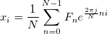

IFFTは、逆フーリエ変換(IDFT)を実行する高速なアルゴリズムで、DFTの処理を元に戻します。シーケンス のIDFTは、次の式で定義できます。

IFFTがOriginで計算される複素数のFFT結果で実行される場合、原理として、これはFFTの結果を元のデータセットに戻します。しかし、これは次の要件が満たされるときのみ、正しく戻すことができます。
|
Note: IFFTの結果で時間シーケンスは0から始まります。元のデータセットが0から開始していない場合、IFFTで生成される時間シーケンスは元の時間シーケンスから移動されます。しかし、間隔は同じです。 |
IFFTを使うには
|
このセクションのトピック: |